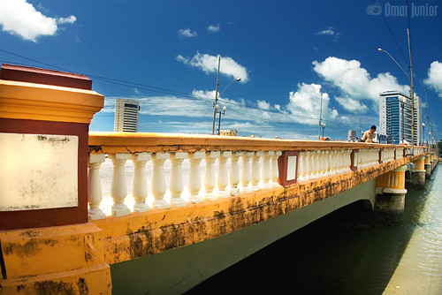

Ponte Buarque de Macedo
A Ponte Buarque de Macedo, também conhecida como Ponte de Ferro, é uma das pontes mais antigas do Recife, construída em 1889. Oferece uma vista incrível do rio Capibaribe.

Praça do Marco Zero
A Praça do Marco Zero é um local de grande importância histórica e cultural, além de ser um ponto de encontro popular para os recifenses. Abriga o Marco Zero, que marca o início das contagens das distâncias rodoviárias do Brasil.